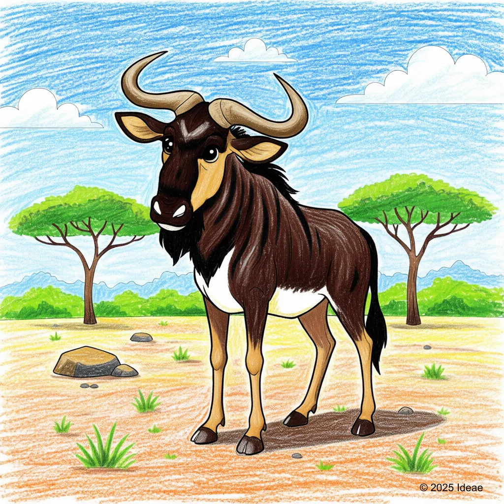

Blue Wildebeest (Gnu)
Connochaetes taurinus

Key Characteristics
- Wildebeests are also called 'Gnus' because of the strange sound they make!
- They live in huge groups and are famous for the 'Great Migration,' moving thousands of miles across Africa.
- They are built tough, with thick necks and strong legs for running from predators.
Peculiar Facts (Fun Facts!)
- The Great Migration involves up to 1.5 million Wildebeest, making it the largest animal movement on Earth!
- Baby Wildebeest can stand up and run with the herd just minutes after being born.
- They often follow Zebras on their migration because the Zebras eat the taller, rougher grasses, leaving the shorter, tastier grass for the Wildebeest.